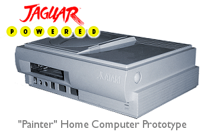
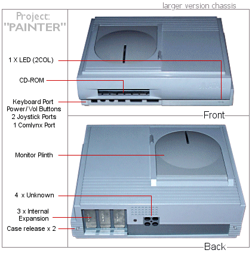

|

During an interview in 1993 about the
Jaguar, Sam Tramiel intimated that the Jaguar could be used as the basis
for new computer models and that Atari was still "interested" in the
computer market. While no more was ever heard publicly about
future Atari computer products, plans were being drawn up for a new home
computer based on the Jaguar architecture.
As early as August 1992, the Atari R&D team
headed by Richard Miller were sketching out plans for a new computer
codenamed "Painter". What was left of the Atari TOS group (the
internal team responsible for the Atari OS and Computer division) were
being asked to produce a wishlist of components based around a core
computing architecture which had already being decided on, the Jaguar.
With the Jaguar system already being readied
for launch as Atari's new gaming platform, the proposed computer would
utilise the development of the Jaguar technology and build a powerful
RISC based home computer. Not only would Atari be optimising their
R&D spend on Jaguar by its dual use, they could relaunch the brand back
into the computer market, something many within Atari were pushing to
see happen.
There is no doubt that a home computer which
could integrate the Jaguar specification in 1993 would be powerful, but
would it be practical or even viable? The overall system would be
a highbred computer aimed at the home, but advanced enough to be used by
professionals, especially in the music industry. It would cater
for families and "ease of use" was part of the model, and ship with as
many "standard" applications as possible. Games would be CD based and
existing Jaguar titles could be ported directly to the new machine.
The inclusion of advanced audio would be advantageous to musicians and
continue Atari's tradition as a leader in the music market.
While there is no confirmation if any actual
working prototype existed, the case was made ready based on a final
specification. Richard Miller told us recently that the project
was ill conceived from the start and it wasn't going anywhere due to
changes within the company and its direct focus on the gaming platform.
Many "ideas" were developed at Atari, and as with any R&D department,
especially those based in the consumer electronics market, its prudent
to have products ready to turn on when required, unfortunately the
"Painter" wasn't one of them.
We have uncovered some internal
specification sheets on the project which you can read below.

|